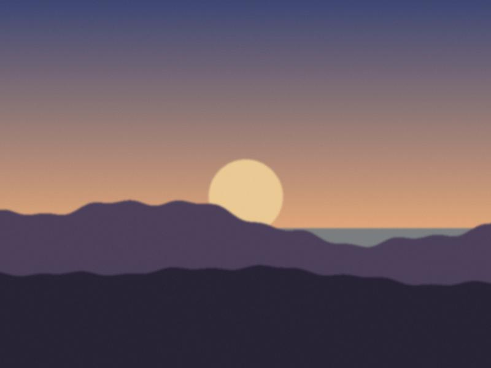
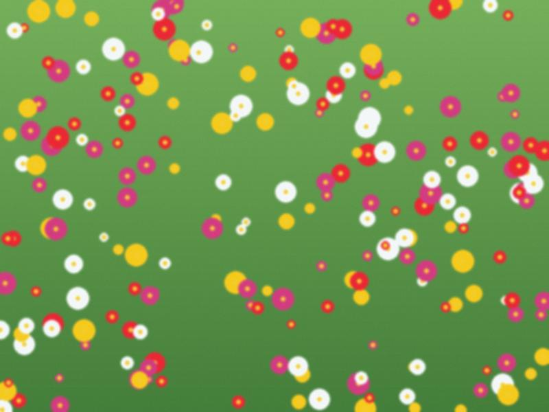

From tomorrow the Great Fast begins and nobody marries until Easter. Seven weeks of nothing. My phone does not ring, the DJ goes to Almaty to his in-laws, and the hall owners repaint the walls.
What do I do? I sleep. I fix the sound system. I learn five new jokes. I also host what is allowed: a circumcision toi (sünnöt toi) for a Muslim family, a children's birthday with a clown who was drunk, one anniversary of a school.
For the engaged couples who read this blog (there are some, I know because they write in the comments from their phone):
- A good hall for 300 guests, dinner with plov or beshbarmak: 3,300 to 3,800 dollars
- Music: a band 250, a DJ 120
- Me: 150 (Saturday), 100 (weekday)
- The photographer and the video: 300 together
- Flowers, the cake, the dress: another 1,000, you will find out
Everybody pays in dollars, because the hall asks in dollars, because the chandeliers were bought in dollars. The envelopes from the guests pay half. The rest is the dowry of the families.
The bride comes on a white horse, led by the groom's kin. This is how it is done, and it is beautiful, and it is also a risk. The horse was a calm old mare called Ak-Bulut, a cloud. Calm until the DJ pushed the button for the entrance music: 400 watts, a bang, a mare who had never in her life heard "Eye of the Tiger".
The groom's cousin held her. The bride stayed on and laughed so much that the photographer almost fell. From now on I check the horse before I check the speaker.

Ak-Bulut after the entrance. She is already forgiven.My favourite toi of the year, maybe of the three years. Last night, Saturday, the toikana by the river. 400 people, one bride who did not eat for two days and one groom who ate for both.

The bride's table. Her friends did the flowers themselves, the night before.Meerim is a student of philology and loves a band called tüntolk, so I asked the DJ for the one song I did not want to play. She screamed. Her friends screamed. Four hundred people who did not know the song sang "kes, kes" anyway, because three girls at the front were so loud. Her father cried. Her brother came from Almaty with a suit that was too big and gave the toast for the parents. The bride's mother had been crying since Sunday, when the groom's family came with the kuda, and she did not stop until midnight.
I do not post names. The bride said yes in her comments. Congratulations, Meerim.
Every toi has him. At every table somebody's uncle stands with a glass for two hours "to say one thing". He started at 8. At 10 I gave him the microphone. At 10.20 he said "I will be short". At 10.50 I put a plate of boorsok in his other hand. At 11 he sat down and we all clapped.
His one thing was: "marry for love, and also a house". Very short.